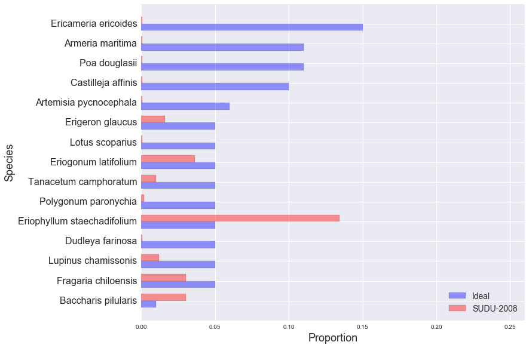

golden gate national parks conservancy: scrub mix
SUDU-2008
EAPO-2011
NMS-2010
NMS-2011
NMS-2012
NUWO-2010
NUWO-2011
NUWO-2012
SUDU-2008
SUDU-2009
SUDU-2010
SUDU-2011
SUDU-2012
Ideal and Observed Scrub Mix, SUDU-2008:
Other Species in SUDU-2008 Sample:
| Species | Observed % |
|---|---|
| Bare Ground | 30.52% |
| Artemisia pycnocephala | 13.45% |
| Grindelia hirsutula var. maritima | 4.42% |
| Unknown grass | 4.42% |
| Thatch/Woody Debris | 3.01% |
| Ambrosia chamissonis | 2.81% |
| Achillea millefolium | 2.41% |
| Lupinus arboreus | 2.41% |
| Rumex salicifolius | 1.61% |
| Ehrharta erecta | 1.41% |
| Bromus diandrus | 1.00% |
| Abronia latifolia | 1.00% |
| mimulus auranticus | 0.60% |
| Eschscholzia californica | 0.60% |
| Oxalis pes-caprae | 0.60% |
| Marah fabaceus | 0.60% |
| Lavatera arborea | 0.40% |
| ericameria ericoides | 0.20% |
| Tetragonia tetragonioides | 0.20% |
| Juncus sp. | 0.20% |
| Tarp/Fabric | 0.20% |
| Rock | 0.20% |
| Rubus ursinus | 0.20% |
| Avena fatua | 0.20% |
| Artemisia californica | 0.20% |